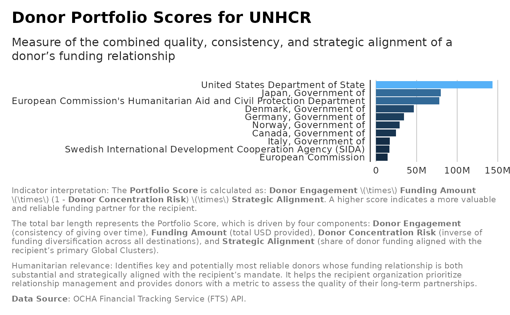

Compute Portfolio Scores for a Recipient
Source:R/analysis_portfolio_scores.R
analysis_portfolio_scores.RdComputes a portfolio score for each donor relative to a given recipient using the formula:
Value
Tibble with columns: donor, donor_engagement, funding_amount, donor_concentration_risk, strategic_alignment, Portfolio_Score
Details
Portfolio_Score = SUM( Donor_engagement * Funding_amount * (1 - Donor_concentration_risk) * Strategic_alignment )
Where:
Donor_engagement = fraction of years the donor funded the recipient (0-1)
Funding_amount = sum(amountUSD) from donor -> recipient
Donor_concentration_risk = HHI of donor across destinations (0-1) higher = more concentrated implies more risk
Strategic_alignment = share of donor funding to the recipient's primary GlobalCluster (0-1) - best-effort derived
Assumptions & notes:
recipientis matched againstdestinationObjects.name(destination type "Location" or "Organization" or "Plan").strategic alignment is computed by comparing GlobalCluster names present in destinationObjects for the recipient vs donor.
HHI is calculated per donor across all destination names (locations/plans).
Examples
scores <- analysis_portfolio_scores(flows,
recipient_name="United Nations High Commissioner for Refugees",
top_n = 10)
ggplot2::ggplot(scores, ggplot2::aes(x = reorder(donor, Portfolio_Score),
y = Portfolio_Score)) +
ggplot2::geom_col( ggplot2::aes(fill = Portfolio_Score)) +
ggplot2::coord_flip() +
ggplot2::labs(title = "Donor Portfolio Scores for UNHCR",
subtitle = "Measure of the combined quality, consistency, and strategic
alignment of a donor's funding relationship",
x = "Donor", y = "Portfolio Score",
caption = paste(
"Indicator interpretation:",
"The **Portfolio Score** is calculated as: **Donor Engagement** $\\times$
**Funding Amount** $\\times$ (1 - **Donor Concentration Risk**) $\\times$
**Strategic Alignment**. A higher score indicates a more valuable and
reliable funding partner for the recipient.",
"\n\n",
" The total bar
length represents the Portfolio Score, which is driven by four components:
**Donor Engagement** (consistency of giving over time), **Funding Amount**
(total USD provided), **Donor Concentration Risk** (inverse of funding
diversification across all destinations), and **Strategic Alignment**
(share of donor funding aligned with the recipient's primary Global
Clusters).",
"\n\n",
"Humanitarian relevance:",
"Identifies key and potentially most reliable donors whose funding
relationship is both substantial and strategically aligned with the
recipient's mandate. It helps the recipient organization prioritize
relationship management and provides donors with a metric to assess the
quality of their long-term partnerships.",
"\n\n",
"**Data Source**: OCHA Financial Tracking Service (FTS) API.")) +
ggplot2::scale_y_continuous(
labels = scales::label_number(scale_cut = scales::cut_short_scale())
) +
unhcrthemes::theme_unhcr(grid = "X", axis = "Y", axis_title = FALSE,
legend=FALSE)
